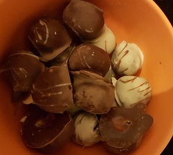

Oreopralinen
Zubereitungszeit: 15min
Kühlzeit: 2 Stunden

- 24 Oreos
- 100g Frischkäse
- 200g Schokolade
- Oreos kleinhacken, mit Frischkäse vermengen und zukleinen Kugeln formen, kalt stellen
- Schokolade kleinhacken und schmelzen
- Noch kalte Pralinen in Scokolade tauchen, trocknen lassen und kühl lagern